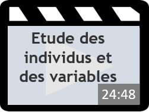
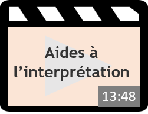
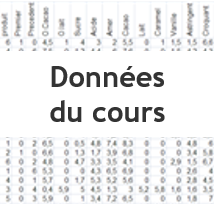
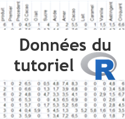
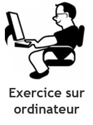
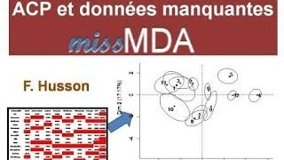
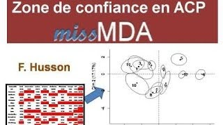

MOOC d'analyse de données
Ce MOOC (Massive Open Online Course) en analyse de données est un cours complet qui nécessite environ 30h d'apprentissage.
ACP - Analyse en Composantes Principales
L'ACP est une méthode bien connue pour explorer et visualiser un tableau de données avec des variables quantitatives. Nous verrons comment visualiser/synthétiser le tableau, mais aussi comment utiliser des variables supplémentaires (quantitatives et qualitatives) pour aider à interpréter les résultats.
Le cours et la mise en oeuvre
|  | ||||
|  |  | |||
|  |
Les exercices
|  |
Pour aller plus loin : gestion des données manquantes
Et voici deux vidéos très courtes qui donnent plus d'informations sur la| gestion des données manquantes | et | la la construction de zones de confiance |
|  |  |
ACP - Analyse en Composantes Principales
L'ACP est une méthode bien connue pour explorer et visualiser un tableau de données. La fonction Factoshiny du package Factoshiny permet de faire une ACP très simplement. Vous pouvez inclure des informations supplémentaires comme des variables qualitatives, gérer les données manquantes, dessiner des graphes et les améliorer de façon interactive, récupérer des indicateurs numériques, faire une classification sur les résultats de l'ACP, et même avoir une interprétation autmoatique des résultats. Finalement, la fonction retourne les lignes de code permettant de retrouver toute l'analyse et de reconstruire les graphes à l'identique, ce qui rend l'analyse reproductible.
Implémentation avec le logiciel R
Voir la vidéo et la transcription de l'audio de cette vidéo:Vidéos de cours
Informations théoriques et pratiques de l'ACP disponibles via 3 vidéos de cours :- Données - problématiques - Quizz
- Etude des individus et des variables - Quizz
- Aides à l'interprétation - Quizz
Matériel
Voici le matériel utilisé dans les vidéos de cours et du tutoriel:- Données Températures : le jeu de données - Rmarkdown - le script avec les sorties
- Données Décathlon : le jeu de données - Rmarkdown - le script avec les sorties
Données manquantes
Et voici deux vidéos très courtes qui donnent plus d'informations sur la gestion des données manquantes, et la la construction de zones de confiance.AFC - Analyse des correspondances
L'analyse des ocrrespondances est la méthode employée pour visualiser des tableaux de contingence, i.e. les tableaux sur lesquels les tests du chi2 peuvent être réalisés. L'AFC est souvent employée en analyse textuelle, sur des tableaux croisant les auteurs ou les textes, avec les mots.
Implémentation avec le logiciel R
Voir la vidéo et la transcription de l'audio de cette vidéo:Vidéos de cours
Informations théoriques et pratiques de l'ACP disponibles via 3 vidéos de cours:- Visualisation des nuages de lignes et de colonnes
- Inertie et pourcentage d'inertie
- Représentation simultanée
- Aides à l'interprétation
- Etude de cas : analyse textuelle
Matériel
Voici le matériel utilisé dans les vidéos de cours et du tutoriel:- Données Nobel : le jeu de données - Rmarkdown - le script avec les sorties
- Données Naissances : le jeu de données - Rmarkdown - le script avec les sorties
ACM - Analyse des Correspondances Multiples
L'ACM est une méthode qui permet d'explorer et visualiser un tableau de données de variables qualitatives. Cette méthode est donc typiquement utilisée pour analyser des questionnaires. La fonction Factoshiny du package Factoshiny permet de faire une ACM simplement. Vous pouvez inclure des informations supplémentaires comme des variables qualitatives, gérer les données manquantes, dessiner des graphes et les améliorer de façon interactive, récupérer des indicateurs numériques, faire une classification sur les résultats de l'ACM, et même avoir une interprétation autmoatique des résultats. Finalement, la fonction retourne les lignes de code permettant de retrouver toute l'analyse et de reconstruire les graphes à l'identique, ce qui rend l'analyse reproductible.
Implémentation avec le logiciel R
Voir la vidéo et la transcription de l'audio de cette vidéo:Vidéos de cours
Informations théoriques et pratiques de l'ACM disponibles via 4 vidéos de cours: Voici le diaporama et la transcription audio du cours.Matériel
Voici le matériel utilisé dans les vidéos de cours et du tutoriel:- Données Loisirs : le jeu de données - Rmarkdown - le script avec les sorties
- Données Thé : le jeu de données - Rmarkdown - le script avec les sorties
Données manquantes
Et voici une vidéo qui donne plus d'informations sur la gestion des données manquantes en ACM.CAH - Classification Ascendante Hiérarchique
La classification ascendante hiérarchique a pour but d'organiser des individus statistiques en fonction de leur ressemblance, soit par un arbre hiérarchique, soit par la constitution de classes d'individus. La fonction Factoshiny du package Factoshiny permet de faire simplement de construire un arbre hiérarchique entre individus, de construire des groupes d'individus, mais aussi d'inerpréter ces classes d'individus.
Implémentation avec le logiciel R
Voir la vidéo et la transcription de l'audio de cette vidéo:Vidéos de cours
Informations théoriques et pratiques de l'ACP disponibles via 4 vidéos de cours:- Classification ascendante hiérarchique
- Exemple et choix du nombre de classes
- Méthode de partitionnement et complémentarité avec la CAH
- Caractérisation des classes d'individus
Matériel
Voici le matériel utilisé dans les vidéos de cours et du tutoriel:- Données Températures : le jeu de données - Rmarkdown - le script avec les sorties
- Données Décathlon : le jeu de données - Rmarkdown - le script avec les sorties
Caractérisation des classe
Et voici une vidéo qui montre comment caractériser les classes.AFM - Analyse Factorielle Multiple
L'AFM est une méthode qui prend en compte plusieurs groupes de variables, permettant de comparer les individus statistiques du point de vue de l'ensemble de ces groupes, et du point de vue spécifique de chaque groupe.
Implémentation avec le logiciel R
Voir la vidéo et la transcription de l'audio de cette vidéo:Vidéos de cours
Informations théoriques et pratiques de l'ACP disponibles via 4 vidéos de cours:- Données - problématiques
- Equilibre et ACP globale
- Etude des groupes de variables
- Compléments (données qualitatives, fréquences, aides à l'interprétation)
Matériel
Voici le matériel utilisé dans les vidéos de cours et du tutoriel:- Données Vins jurys : le jeu de données - Rmarkdown - le script avec les sorties
- Données Vins senso : Rmarkdown - le script avec les sorties